Ano 2189. O céu sangrou sobre Carmesin e NEXUS apagou a memória do mundo. Você é Kael Veyron, a Unidade ZERO: atravesse florestas, vilarejos, ruínas e megacidades, forje sua lenda com a Tempestade Nula e derrube o sistema que decidiu o fim de todos.
Roda direto no navegador (Chrome, Edge ou Firefox) — no computador ou no celular. Na primeira vez carrega cerca de 30 MB.
ECLIPSE ZERO é um RPG de ação com combate hack and slash, árvores de habilidades e equipamento de verdade: cada armadura e cada arma que você veste aparece no herói, em 3D. Combine golpes leves e pesados, esquiva, defesa e as habilidades de cada classe — os cristais rubros do Guerreiro, as flechas violeta da Arqueira, a luz celeste da Sacerdotisa e o raio arcano da Unidade ZERO.
Entre missões e campanhas, a vida continua: moradores com rotina, tavernas que enchem no Horário do Bardo, um pub cyberpunk com DJ na Cyber Night, lojas de pets e montarias, ofícios, baús por raridade e um Guardião do Mundo que abençoa quem ajuda a cidade.
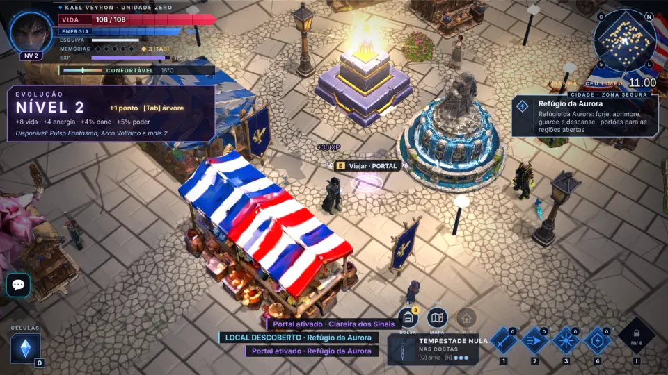
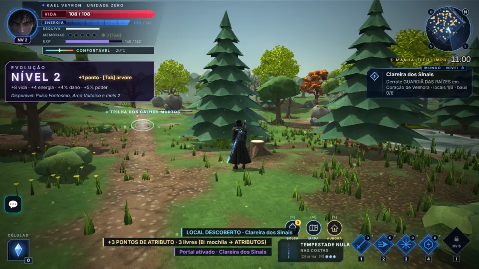
Regiões abertas e contínuas: a zona vizinha já aparece além da borda e você passa por ela andando, sem portal. Distância de visão até o horizonte.
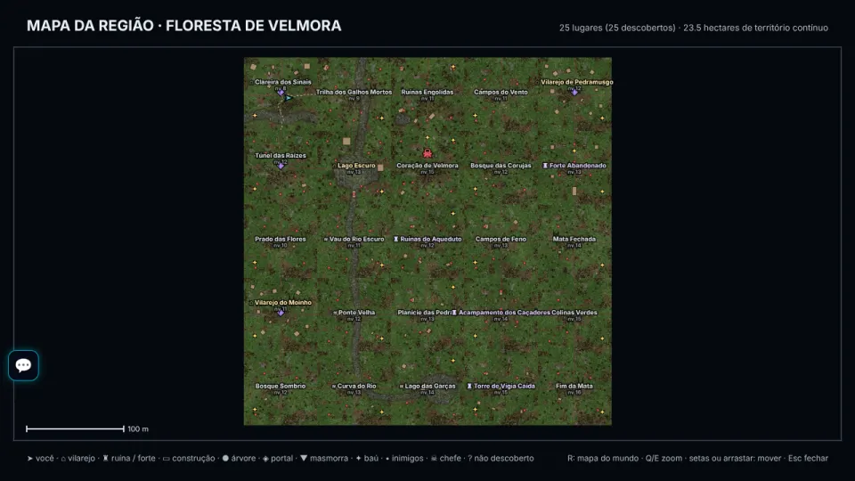
Campos, bosques, dois vilarejos, ruínas, um forte abandonado e um rio que desce do Lago Escuro ao Lago das Garças — tudo num território só.
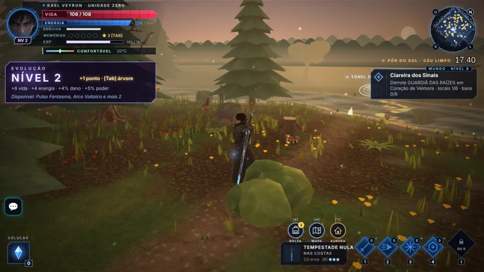
Sol de verdade que anda no céu, sombras que acompanham a hora, lua com fases, chuva, neve, neblina e tempestade.
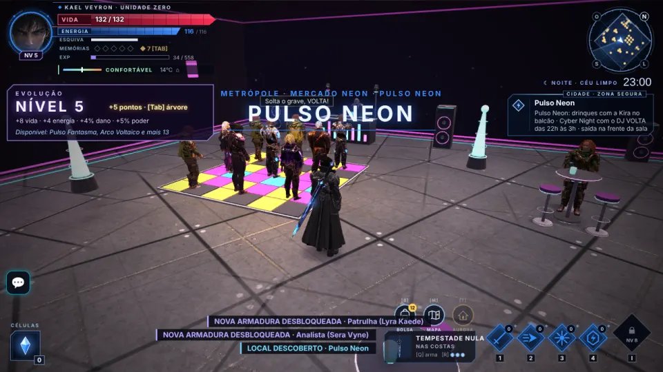
Taverna com o Bardo das oito às onze, pub cyberpunk com DJ na Cyber Night, mercados, ferrarias e moradores com rotina.
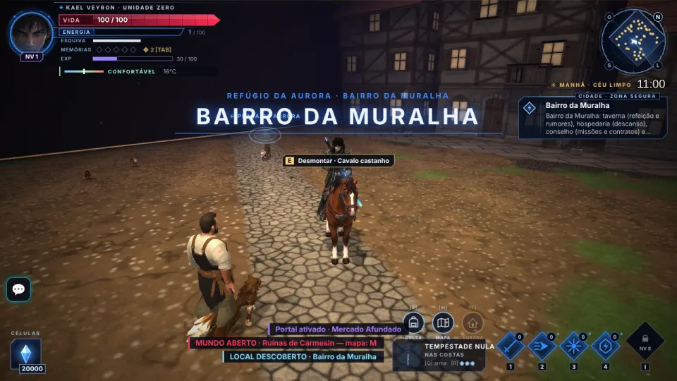
Cavalos, lobos de montaria e aves gigantes, além de cães, gatos e companheiros que seguem você pelo mundo.
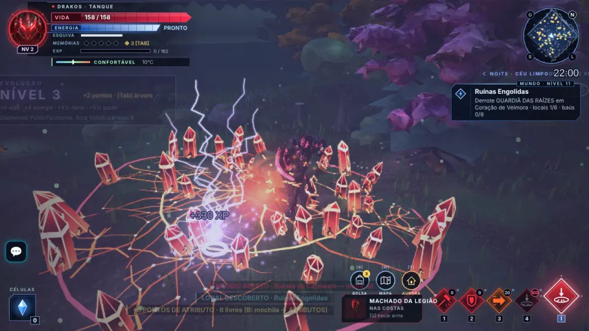
Cada classe com a sua coreografia e seus efeitos. Três câmeras: isométrica clássica, isométrica 3D com rotação e terceira pessoa.
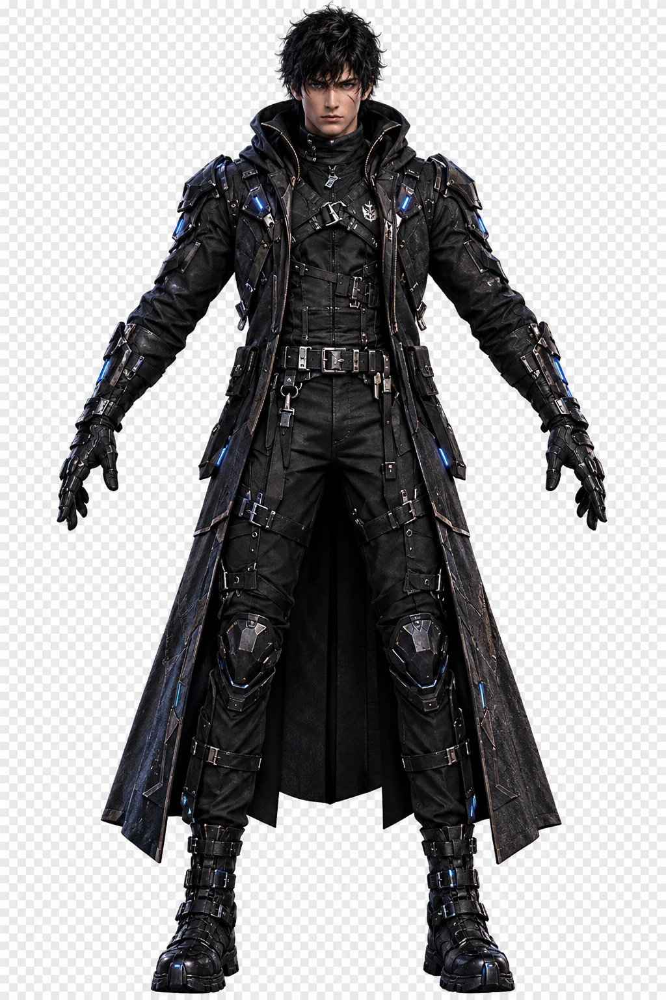
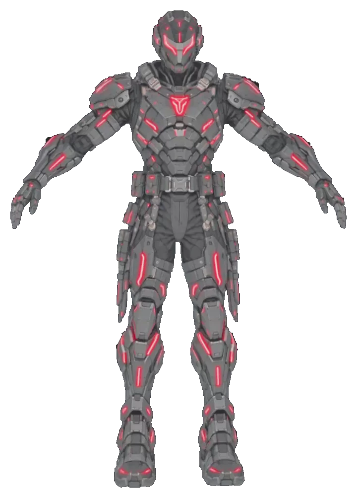
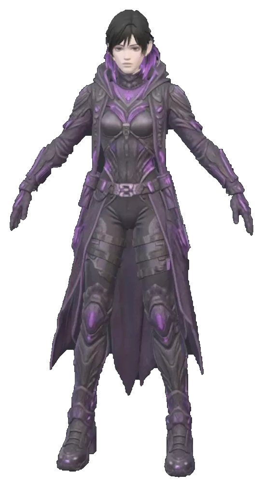
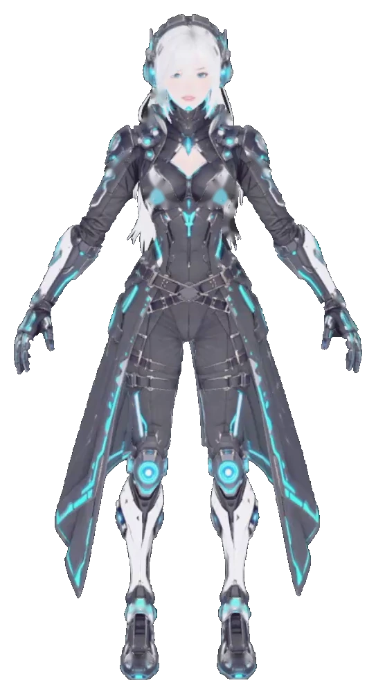
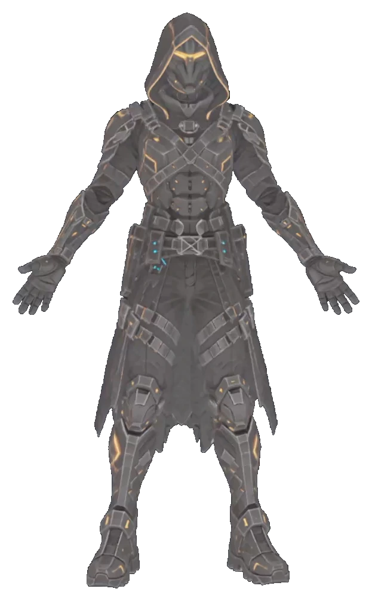
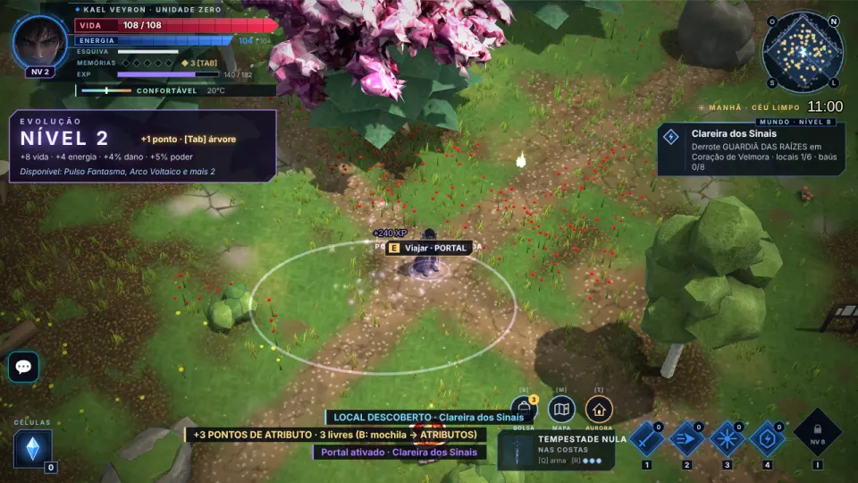
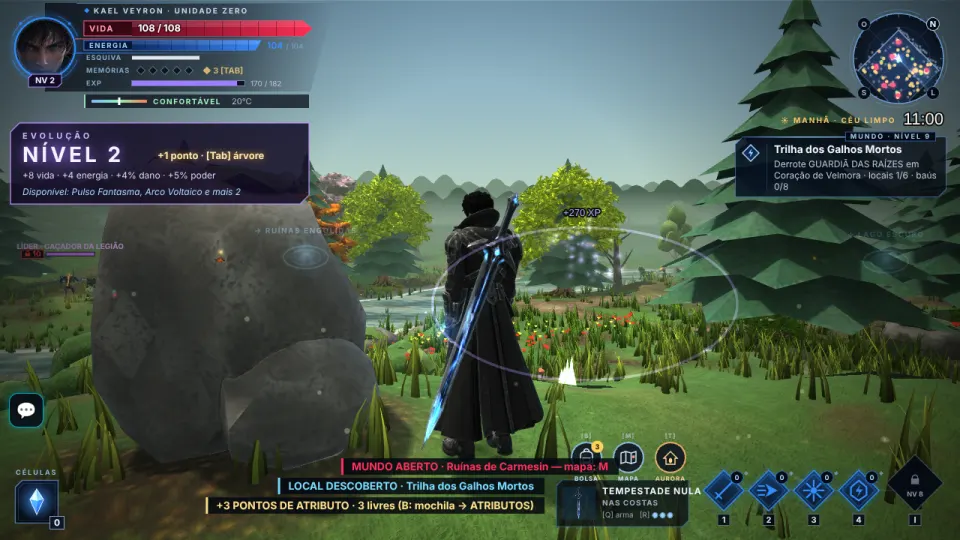
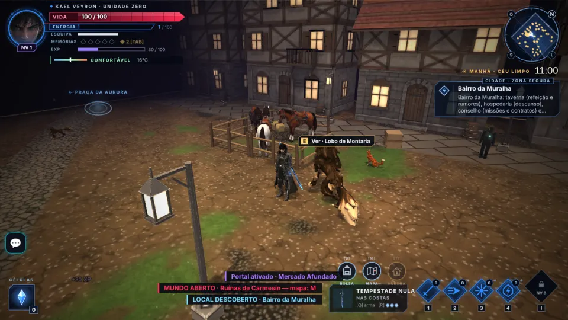
O app de PC abre a mesma versão do jogo publicada aqui: toda atualização chega sozinha, na web e no computador, sem baixar de novo. Depois da primeira vez ele também abre sem internet.
Controles de Xbox, PlayStation e GameSir funcionam direto. No celular, os botões aparecem na tela.